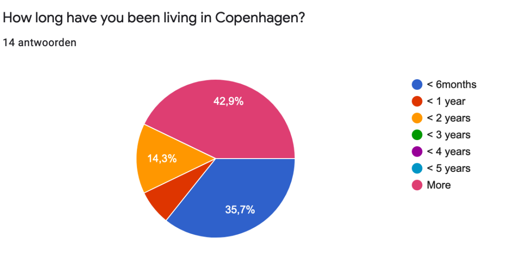
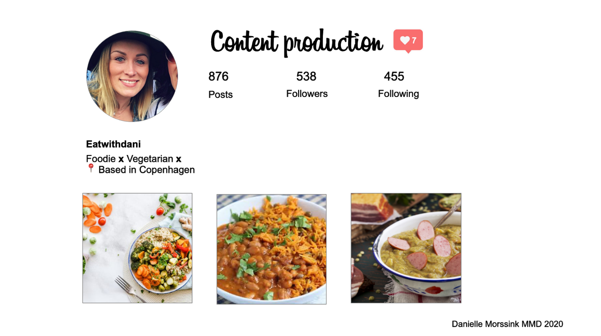
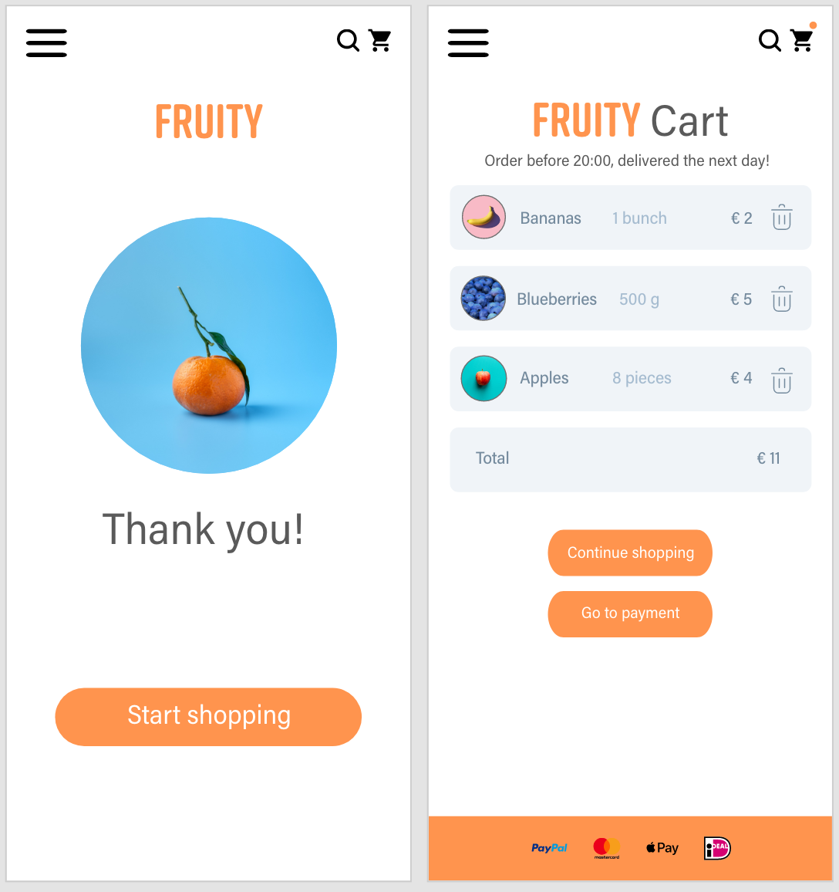
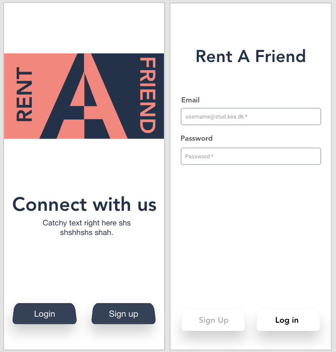
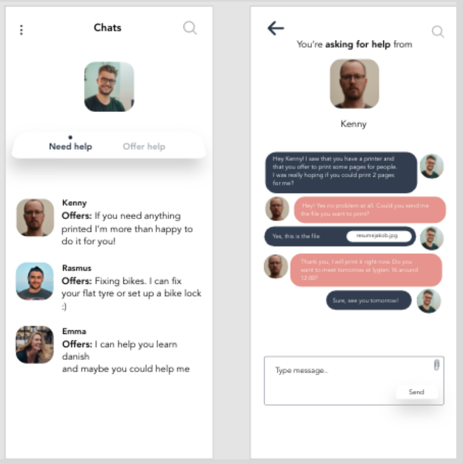

For this assignment I had to multiple forms of research such as: desk research, observation research, interview research and survey research.
03
BASIC UX
In the basic UX theme I learned the users and user faces interaction, but also tools, theories and methods I can use for research, design and test developing a digital product.
During this theme I worked on 5 assignments: data collection, content production, making a prototype, design sprint and pitch deck.
03.01.01 DATA COLLECTION

03.02.01 CONTENT PRODUCTION

For this assignment I had to produce written content for a mobile website that matches the needs of a specific target person. In my case were my fellow students, but also a specific sender which was a creative instagrammer.
03.03.01 PROTOTYPE

For this assignment I had to produce a clickable prototype for a small web shop with a maximum of 10 products. My prototype was made for parents who want to buy fruit for their children. The focus of this assignment was on UI and UX conventions, design patterns and UI kits.
03.04.01 DESIGN SPRINT

This assignment was a group project where we had to use a design sprint method to create a native app concept improving student life and studying for KEA students. We had all the freedom to create this native app which was pretty fun.
03.04.02 PITCH DECK

For the pitch we had to come up with a clear and and of course a convincing solution for our native app we created. In the pitch we described our first problem, our solution, our target users our goal and long term goal and the app’s value and key players.